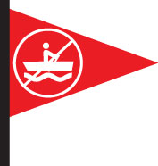

{% block header %} Water Quality Flagging Program ( 5/29/2020 ) {% endblock
%}
The following predicted concentrations of Fecal Indicator Bacteria (FIB) are
based on modeled correlations between FIB and weather or water conditions.
Flagging is based on safety thresholds for boating. The weather and water
data is sourced from the CESN weather station at Community Boating and the
USGS Waltham river flow gauge.
Currently the predictions are only based on
one year of historical statistics. An ideal model would include 2-3 years of
history. New models will be developed in future years as more data is
collected.
Click here for a full description of this bacteria forecasting
project.
Water quality flags, with forecasted E.coli concentrations and
probabilities (updated hourly):
{% block body %} {{ tables|safe }}

 {% endblock %}
{% endblock %}